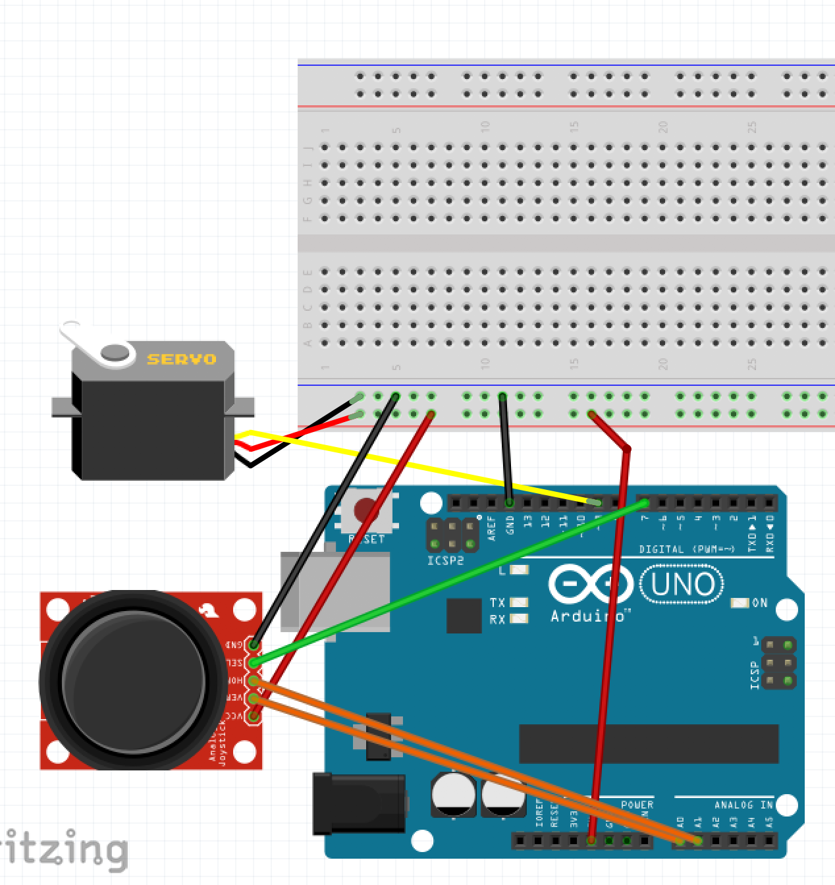
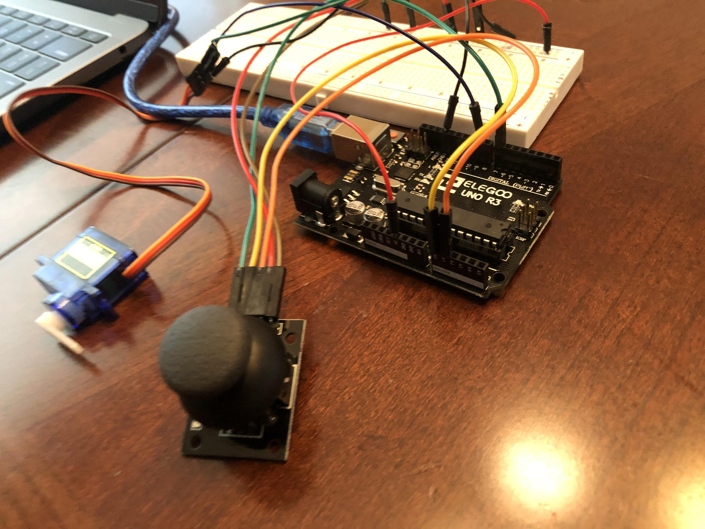
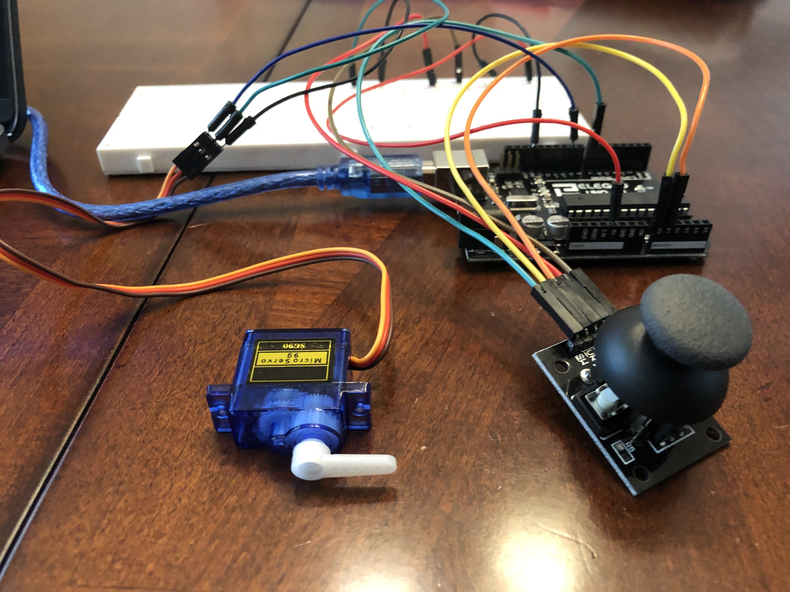
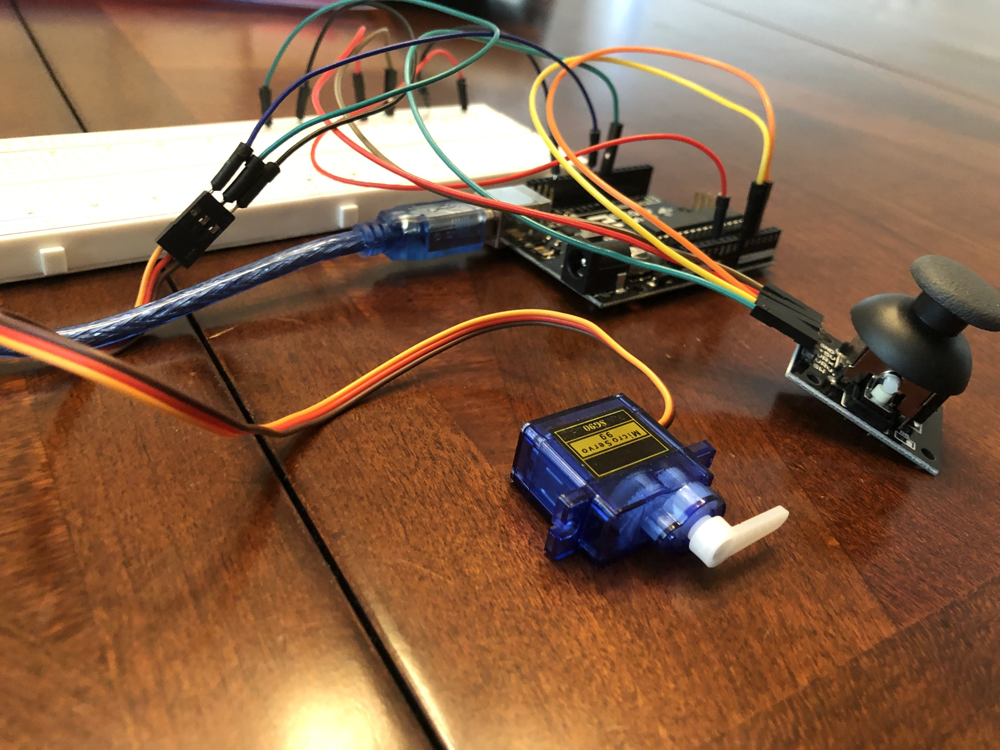
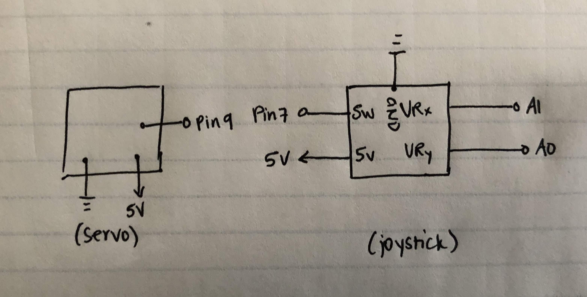
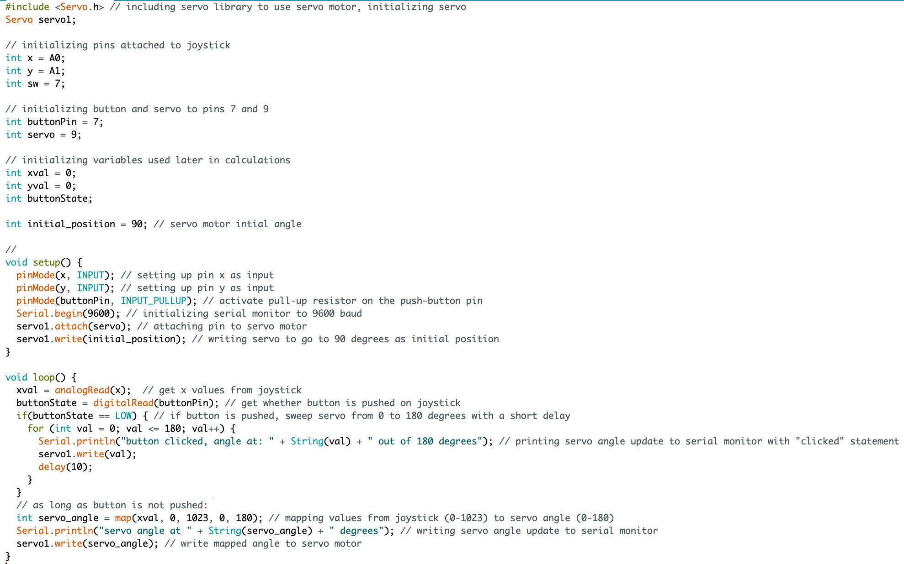

Circuit demo:

This is a gif showing how the joystick values make the servo turn to a cooresponding angle.

This is a gif of the serial output, printing values of the servo motor as it is turned.
Circuit diagram:

This is an image with details regarding how the circuit is assembled.
Here are some images of how the circuit looks assembled:
  
Schematic:

This is a schematic of my circuit.
Calculations:
There were not many real calculations to do when creating this circuit. One calculation/translation was the mapping of the joystick value to servo angle.
Using the map function, we translated values 0-1023, to servo angles 0-180. That means that every 5-6 points the joystick moves, there will be a 1 degree angle change with the servo.
Code Snippet:

I used the serial monitor to print out what angle the servo motor is at.